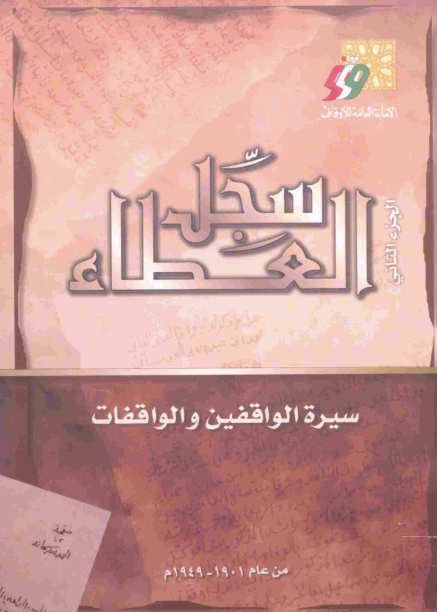

وقف ٢٨ جمادى الآخرة ١٣١٩هـ (١١ أكتوبر ١٩٠١م)؛ كتاب الأمانة العامة للأوقاف · صفحات من سجل العطاء، الجزء الثاني: سيرة الواقفين والواقفات، من عام ١٩٠١ إلى ١٩٤٩م، الأمانة العامة للأوقاف، مع صورة الحجة الأصلية
«محلة بن قطامي» و«بيت عبدالوهاب ابن قطامي» سنة ١٩٠١، وعائشة بنت عبدالعزيز القطامي سنة ١٩٠٣، في سجل العطاء الجزء الثاني
ما هي
الوقف رقم ٣ (ص ١٠): في ٢٨ جمادى الآخرة ١٣١٩هـ الموافق ١١/١٠/١٩٠١م أوقفت زاكية ومنيرة بنات عيسى بن محمود «نصف بيت في محلة بن قطامي المحدود قبلة الطريق النافذ وشمالا الطريق النافذ وشرقا الطريق النافذ وجنوبا بيت عبدالوهاب ابن قطامي»، على ذريتهما ما تناسلوا. وشهد عليه محمد بن صالح بن محمد بن ملا حسين، وشهد نقلا عن حبابة بنت الشيخ صباح، ووثقه القاضي محمد بن عبدالله بن محمد بن صالح بن حسين العدساني في عهد الشيخ مبارك الكبير. وفي الصفحة صورة الحجة الأصلية وفيها «عبدالوهاب ابن قطامي». والوقف رقم ٧ (ص ١١): في ٢٦ شوال ١٣٢٠هـ الموافق ٢٥/١/١٩٠٣م أوقفت بزة بنت نورة القعيان بيتها «الذي اشترته ابنة الواقفة عائشة بنت عبدالعزيز القطامي من فاطمة بثمن وقدره ١٨٠ ريالا»، لها ولأمها، ثم لابنتها عائشة وذريتها.
أهميتها
سجل رسمي للأوقاف، مع صورة حجة سنة ١٩٠١، يوثق محلة بن قطامي وبيت عبدالوهاب ابن قطامي، ويؤكد حجة بزة سنة ١٩٠٣ المنشورة في هذا الموقع.
صور الصفحات


ملاحظات
نعرض هنا الصفحات الأولى فقط، ويرى أفراد العائلة بعد تسجيل الدخول كل الصفحات وعددها 3.
أسماء أخرى
المصادر
الأمانة العامة للأوقاف، سجل العطاء، الجزء الثاني: سيرة الواقفين والواقفات ١٩٠١ إلى ١٩٤٩م، ص ١٠ و١١ (الوقفان رقم ٣ و٧)
كيف كُتب هذا النص: لا تذكر الحجة اسم أبي عبدالوهاب، فلم تربط بشخص في الشجرة. ولم توضع عائشة بنت عبدالعزيز زوجة سعد بن غانم بن سعد في الشجرة بعد.
افتح في الموقع التفاعلي